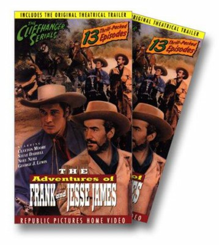

Meine Filme

Darsteller Steve Darrell
Alle Darsteller
Nr.
Titel
Jahr
FSK
Minuten
Auflösung
IMDB
Meta
Genre
5024
Adlerschwinge
1954
12
78
1080p
6.2 / 10
0
Western
4263
Auf der Spur des Todes
1956
12
81
1080p
6.5 / 10
0
Western
2284
Drei Rivalen
1955
12
103
1080p
6.7 / 10
0
Action
8657
Furchtlosen, Die
1956
12
94
1080p
7.1 / 10
0
Western
11086
Gnadenlosen Vier, Die
1961
12
88
720p
6.7 / 10
0
Western
8706
Schwarze Reiter, Der
1947
12
99
1080p
7.0 / 10
0
Western
3893
Winchester 73
1950
12
88
720p
7.7 / 10
0
Drama